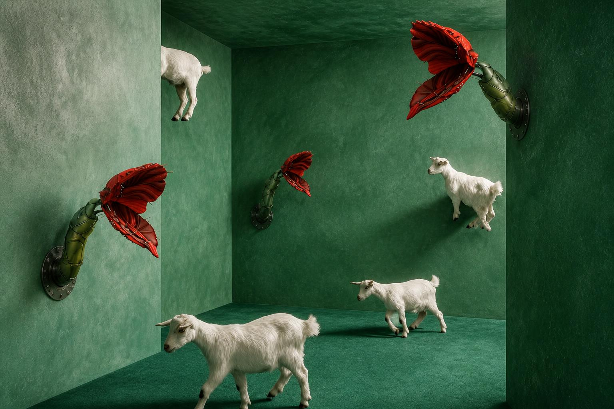

Project

Multiverse Garden
Ｍultiverse Garden 為21世紀的奢侈花藝品牌，擺脫過去純販售商品的花藝電商網站，打造一個讓使用者如同進到一間花店時的花藝品牌網路空間。品牌故事核心由『自然界的植物姿態與超現實主義的科幻環境』共組而成，帶有一種神秘、包容、無限可能的生態感，強調個人品味、居家美學的儀式感。
Amazing Talker Redesigned
本專案為 Amazing Talker redesign case study，根據本人與親友透過平台學習的經驗發現一些介面使用的痛點，決定為 Amazing Talker 以 Design Thinking 流程進行網頁迭代設計，創造一個讓學員及教師可以更直覺找到需求入口、使學習更輕鬆愉快的線上學習平台。
UI UX Design & Case Study